Über 40 Jahre Expertise
Im Sommer 1983 gründete Leo Stracke in Steinalben (Rheinland-Pfalz) ein Büro für bodenmechanische Baugrunduntersuchungen – zunächst als Ein-Mann-Betrieb. Schon nach wenigen Wochen kam der erste Mitarbeiter dazu. 1985 folgte der Umzug nach Waldfischbach.
Ende 1991 entstand ein Zweigbüro in Wilsdruff bei Dresden, das Mitte 1996 an einen ehemaligen Mitarbeiter übergeben wurde.
Das Wohnhaus in Waldfischbach wurde zu klein – im Sommer 2000 begann der Bau eines eigenen Labor- und Bürogebäudes in Höheinöd. Seit 2001 arbeiten wir in den neuen Räumen.
Gleichzeitig erweiterten wir unser Leistungsspektrum: Neben Baugrunduntersuchungen bieten wir nun auch Betonprüfungen an. Der neue Name: „S-BB – Stracke – Baugrund & Beton".
Im Juni 2008 wurde die S-BB GbR gegründet. Nach ihrem Studium an Fachhochschule und Berufsakademie übernahmen Christian und Steffen Stracke gemeinsam mit Leo Stracke die Geschäftsführung.
Seit Dezember 2009 sind wir mit einem zweiten Büro in Kelsterbach vertreten – in unmittelbarer Nähe zum Frankfurter Flughafen.
Im Sommer 2017 startete die umfangreiche Erweiterung und Modernisierung unseres Standorts in Höheinöd – Anfang 2018 war der Umbau abgeschlossen.
Zum 01.01.2018 gründeten Christian und Steffen Stracke die S-BB Baustoffprüfung GmbH.
 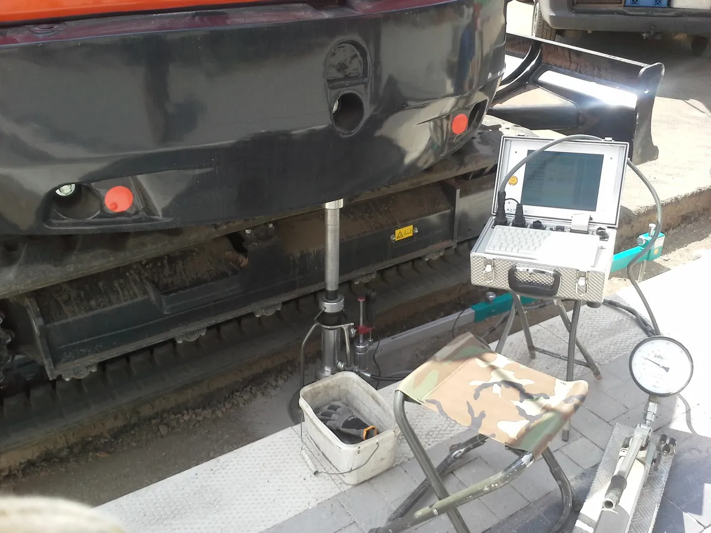
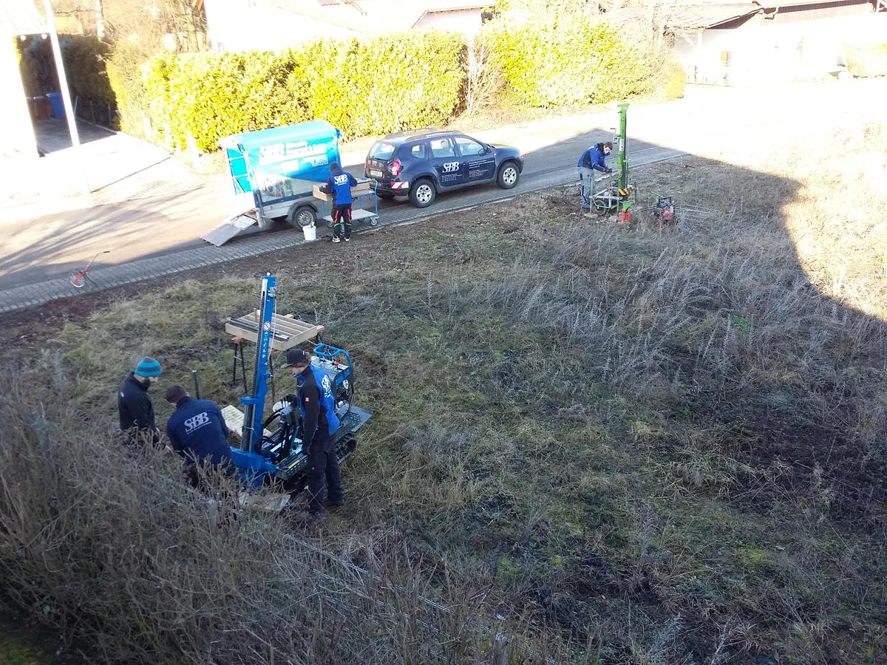
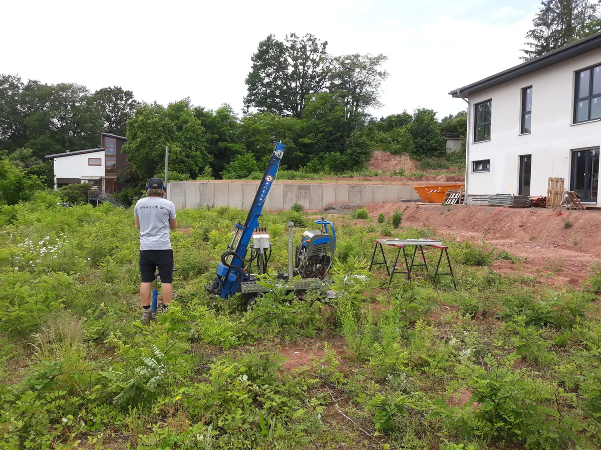
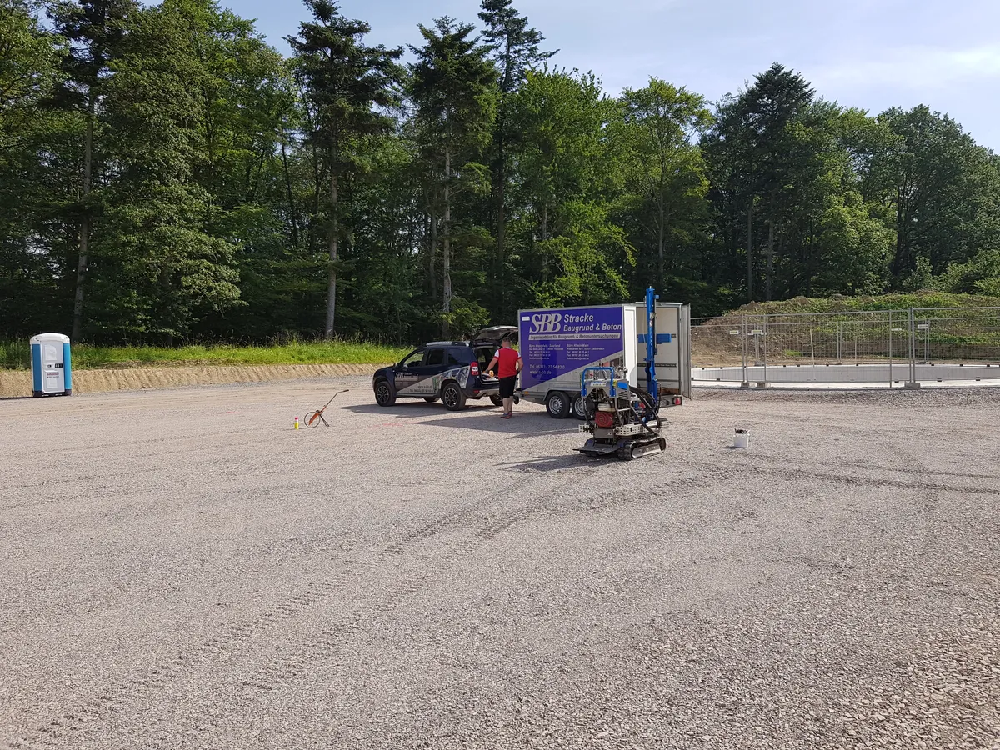
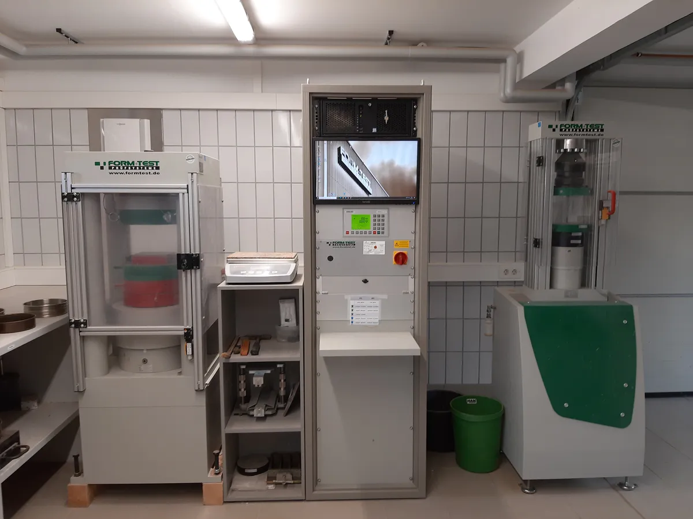
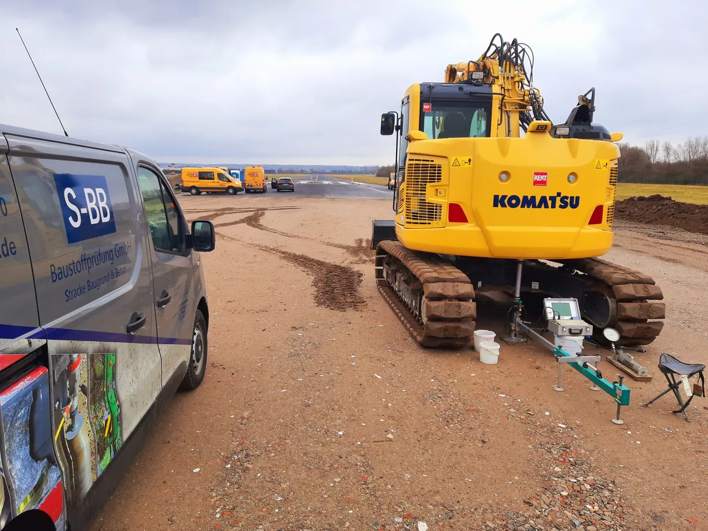
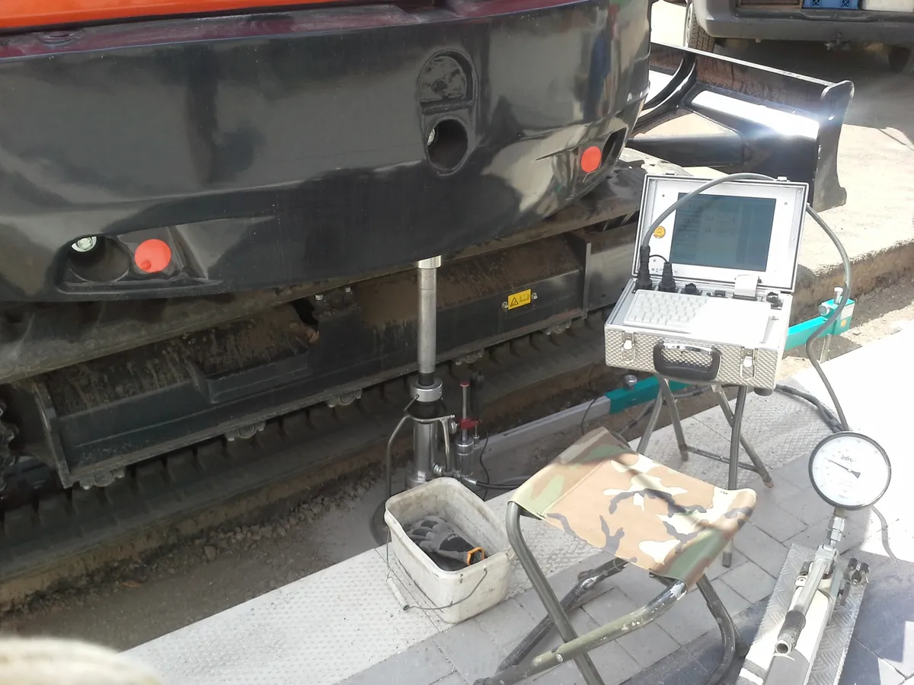
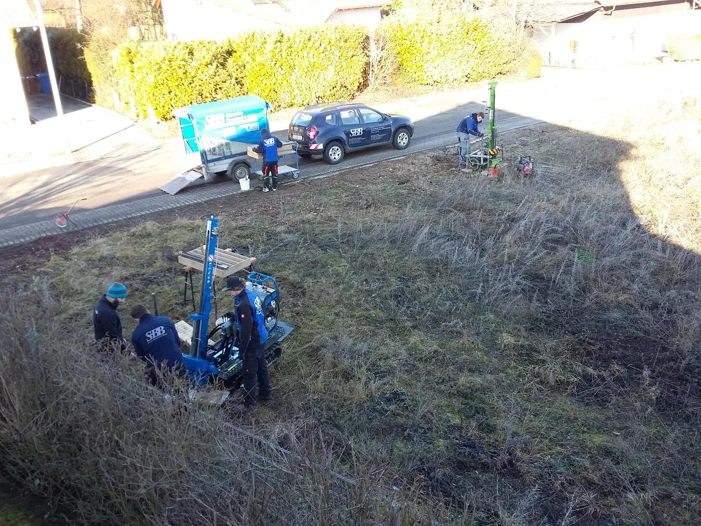
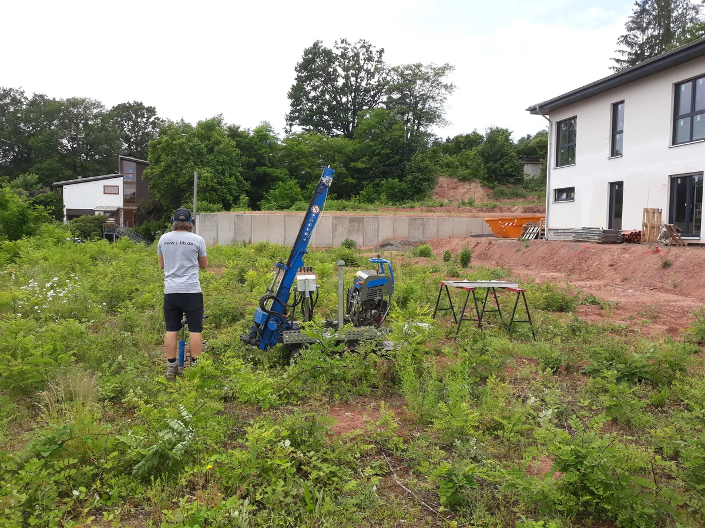
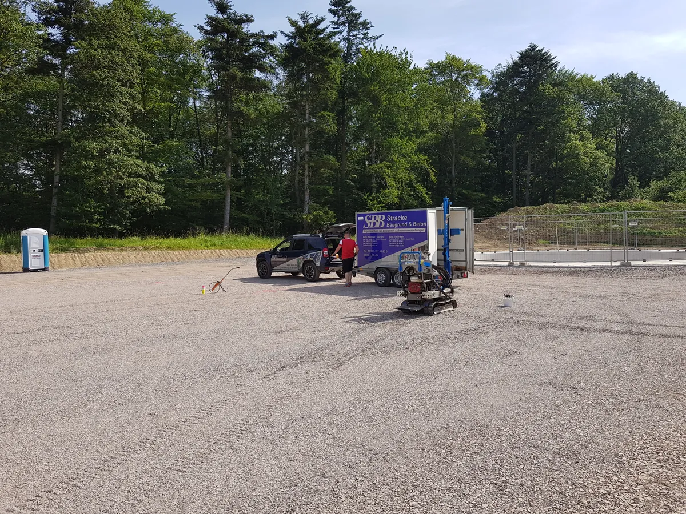
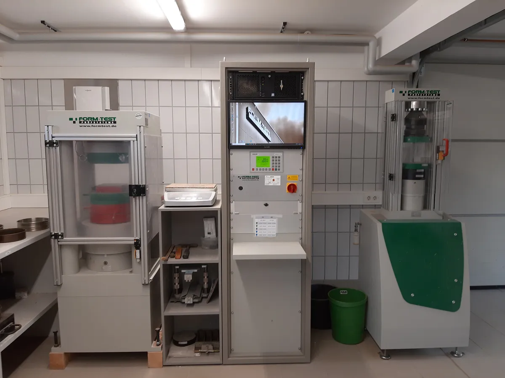
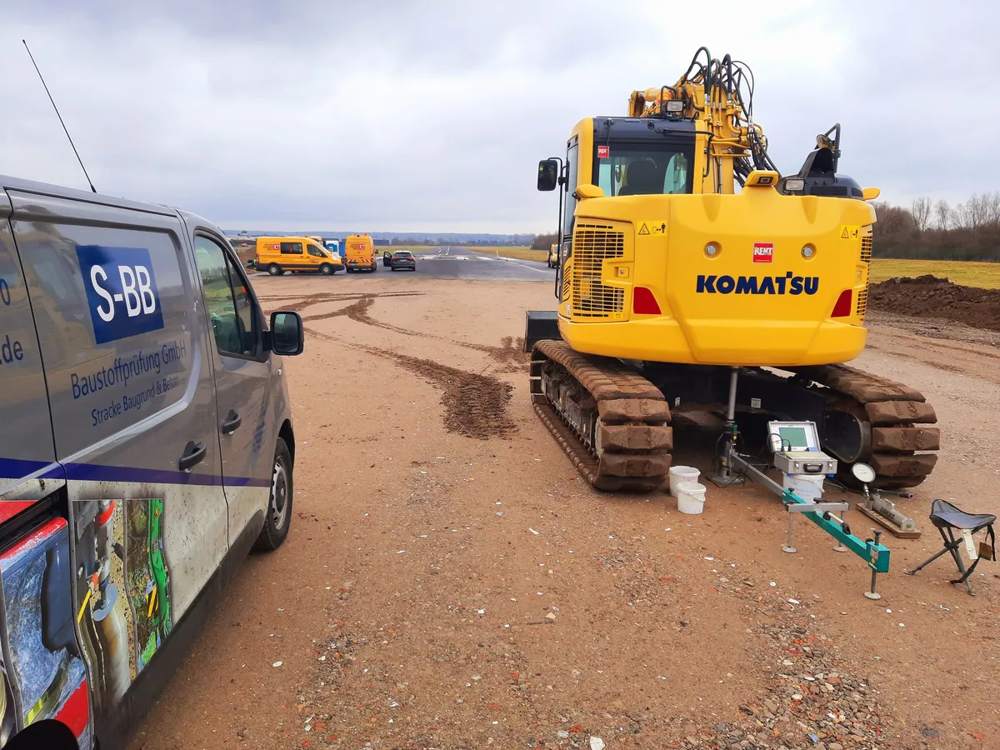
Heute beschäftigt die S-BB Baustoffprüfung GmbH über 20 Mitarbeiterinnen und Mitarbeiter – darunter Ingenieure, Techniker, Baustoffprüfer und kaufmännische Angestellte. Als anerkannter Ausbildungsbetrieb bilden wir Baustoffprüfer aus und bieten in Kooperation mit der DHBW Mosbach ein duales Studium zum Bauingenieur an.
Unser Team betreut eine Vielzahl von Kunden aus der Bauwirtschaft: Wir begleiten Baustellen im Hoch-, Tief- und Straßenbau und überwachen zahlreiche Kies- und Hartsteinwerke in der Region.